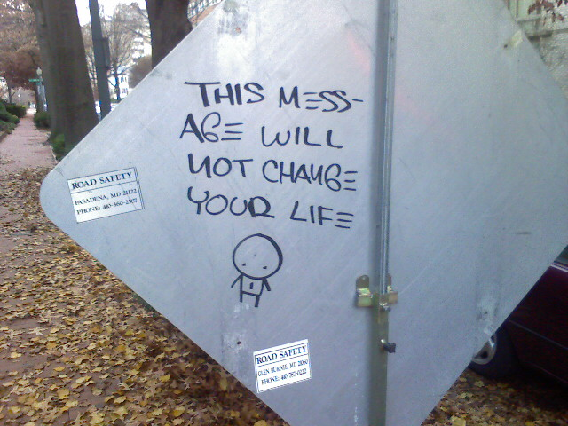
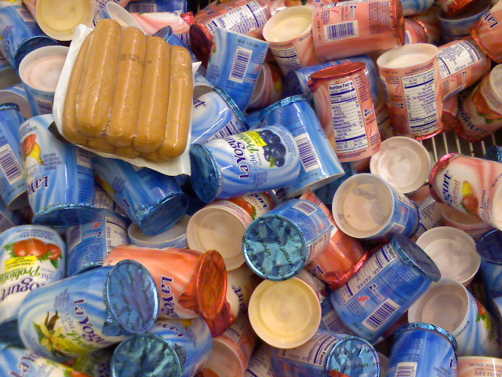
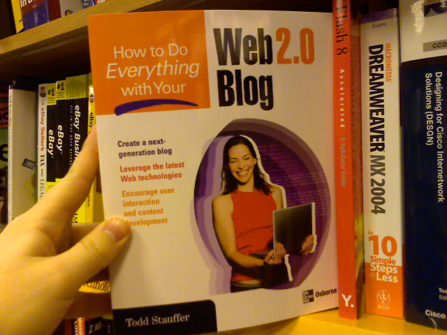

Prince George’s Plaza Metro Stop

The green line train I was on decided not to stop at my stop. Instead I got off early and played around with my phone.

The green line train I was on decided not to stop at my stop. Instead I got off early and played around with my phone.

Street art I pass everyday on my walk to the metro home.
Got a Chumby for Xmas from my parents. Can’t access their wifi so I will play with it when I get home. Full review will soon follow.
I’m at a mall near York, PA, which has a gothic store featuring figurines of skulls, dragons, fairies, and wizards. Nothing worth buying but they are interesting to look at while your girlfriend is buying clothes.
It’s like the 4th of July and Christmas at the same time. Only it’s cold out. And it’s almost Christmas. I need to wrap presents…

Grocery shopping at Giant around midnight. I love when two completly different food items get mixed together.

I was browsing the computer book shelf at Borders when I saw this unfortunate book. Jeez, web 1.0 blogs are sooo lame.

People at work egged me on to moblog this mound of cake that we got for a co-worker.

Kristina is building center pieces for a Filipino semi-formal event tommorrow night at the University of Maryland. The theme is ‘masqurade’ hence all of the masks.

Nope. Just the remnants of an all night college crafts party.